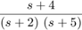
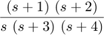
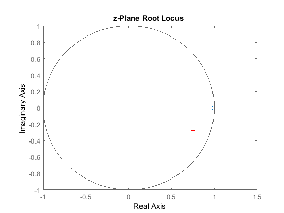
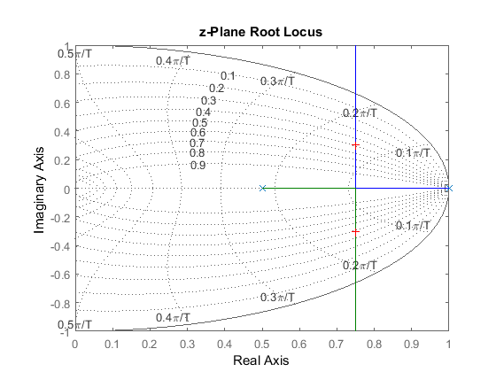
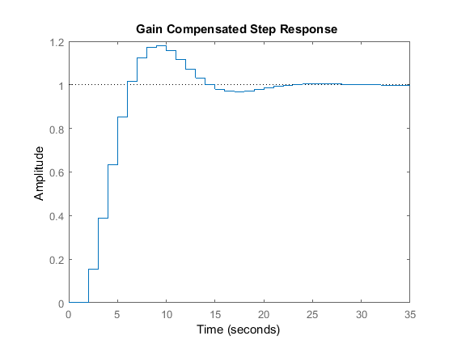

Contents
ELEC 460 Midterms
clear all close all format compact format short
Nise Chapter 13 -- Digital Control Systems
syms z k % 3 a) Q3aF = z*(z+3)*(z+5)/((z-0.1)*(z-0.5)*(z-0.7)) Q3af = iztrans(Q3aF,k) % 3 b) Q3bF = (z+0.2)*(z+0.4)/((z-0.1)*(z-0.5)*(z-0.9)) Q3bf = iztrans(Q3bF,k) % 3 c) Q3cF = (z+1)*(z+0.3)*(z+0.4)/(z*(z-0.2)*(z-0.5)*(z-0.7)) Q3cf = iztrans(Q3cF,k)
Q3aF = (z*(z + 3)*(z + 5))/((z - 1/2)*(z - 1/10)*(z - 7/10)) Q3af = (527*(1/10)^k)/8 - (1925*(1/2)^k)/8 + (703*(7/10)^k)/4 Q3bF = ((z + 1/5)*(z + 2/5))/((z - 1/2)*(z - 1/10)*(z - 9/10)) Q3bf = (75*(1/10)^k)/16 - (63*(1/2)^k)/8 + (715*(9/10)^k)/144 - (16*kroneckerDelta(k, 0))/9 Q3cF = ((z + 1)*(z + 2/5)*(z + 3/10))/(z*(z - 1/2)*(z - 1/5)*(z - 7/10)) Q3cf = 60*(1/5)^k - 72*(1/2)^k - (12*kroneckerDelta(k - 1, 0))/7 + (1870*(7/10)^k)/49 - (1282*kroneckerDelta(k, 0))/49
Question 6, Nise The general format to solve these questions in matlab is to: 1. symbolically enter the given expression in the laplace domain 2. use partial fraction expansion. 3. inverse laplace transform to the time domain, 4. transform to z-domain

a)
syms s
Q6a = (s+4)/((s+2)*(s+5))
Q6afrac = partfrac(Q6a)
Q6atime = ilaplace(Q6afrac)
Q6azdo = ztrans(Q6atime)
Q6a = (s + 4)/((s + 2)*(s + 5)) Q6afrac = 2/(3*(s + 2)) + 1/(3*(s + 5)) Q6atime = (2*exp(-2*t))/3 + exp(-5*t)/3 Q6azdo = (2*z)/(3*(z - exp(-2))) + z/(3*(z - exp(-5)))

b)
Q6b = (s+1)*(s+2)/(s*(s+3)*(s+4)) Q6bfrac = partfrac(Q6b) Q6btime = ilaplace(Q6bfrac) Q6azdo = ztrans(Q6btime)
Q6b = ((s + 1)*(s + 2))/(s*(s + 3)*(s + 4)) Q6bfrac = 3/(2*(s + 4)) - 2/(3*(s + 3)) + 1/(6*s) Q6btime = (3*exp(-4*t))/2 - (2*exp(-3*t))/3 + 1/6 Q6azdo = z/(6*(z - 1)) - (2*z)/(3*(z - exp(-3))) + (3*z)/(2*(z - exp(-4)))
Nise Examples Matlab
'(ch13p7) Example 13.10' % Display label. clf % Clear graph. numgz=[11]; % Define numerator of G(z). dengz=poly([1 0.5]); % Define denominator of G(z). 'G(z)' % Display label. Gz=tf(numgz,dengz,[]); % Create and display G(z). rlocus(Gz) % Plot root locus. zgrid([],[]) % Add unit circle to root locus. title (['z-Plane Root Locus ']) % Add title to root locus. [K,p]=rlocfind(Gz) % Allows input of K by selecting % point on graphic. figure '(ch13p8) Example 13.11' % Display label. clf % Clear graph. numgz=[11]; % Define numerator of G(z). dengz=poly([1 0.5]); % Define denominator of G(z). 'G(z)' % Display label. Gz=tf(numgz,dengz,[]); % Create and display G(z). rlocus(Gz) % Plot root locus. axis([0,1,-1,1]) % Create close-up view. zgrid % Add damping ratio curves to root % locus. title(['z-Plane Root Locus']) % Add title to root locus. [K,p]=rlocfind(Gz) % Allows input of K by selecting % point on graphic. figure 'T(z)' % Display label. Tz=feedback(K*Gz,1) % Find T(z). step(Tz) % Find step response of gain- % compensated system. title (['Gain Compensated Step Response ']) % Add title to step response of % gain-compensated system.
ans =
'(ch13p7) Example 13.10'
ans =
'G(z)'
Select a point in the graphics window
selected_point =
0.7506 + 0.2786i
K =
0.0127
p =
0.7500 + 0.2786i
0.7500 - 0.2786i
ans =
'(ch13p8) Example 13.11'
ans =
'G(z)'
Select a point in the graphics window
selected_point =
0.7524 + 0.3034i
K =
0.0141
p =
0.7500 + 0.3034i
0.7500 - 0.3034i
ans =
'T(z)'
Tz =
0.1546
--------------------
z^2 - 1.5 z + 0.6546
Sample time: unspecified
Discrete-time transfer function.
  